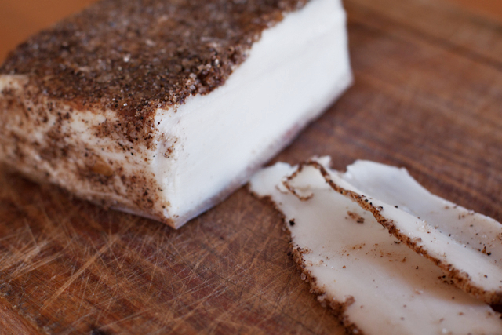

Lardo is an Italian salumi consisting of pork fat back that has been cured and dried. This is my first attempt at lardo and I've changed the concept a bit to make it simpler. Instead of slabs of beautiful white pork fat back I'm going to use a quicker cure and grind the fat, whipping it afterward to create more of a lardo spread to put on bread or to use for cooking. 